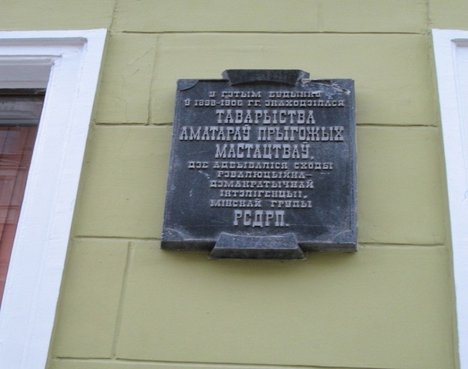
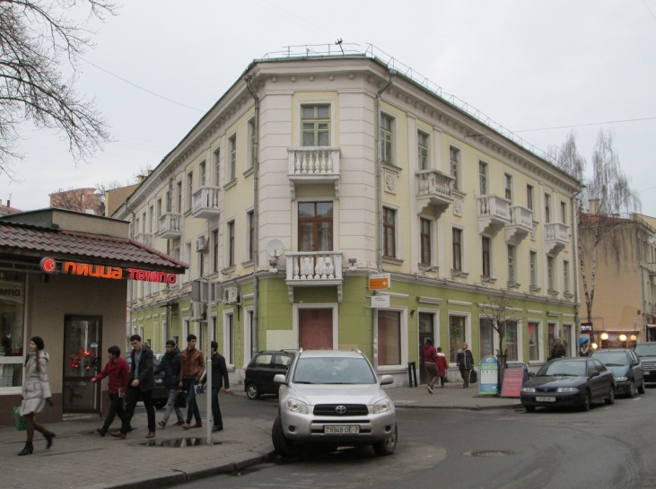

У гэтым доме з 1898 года дзейнічала Таварыства аматараў прыгожых
мастацтваў, дзе быў сканцэнтраваны асяродак літаратурнай і тэатральнай культуры
горада. Таварыства налічвала чатыры секцыі: мастацкую, драматычную,
літаратурную і музычную. Вядома, што адным з сяброў Таварыства (якіх, дарэчы,
праз год існавання налічвалася ўжо 400) быў вядомы мастак і педагог Якаў Кругер.
Самай актыўнай секцыяй была літаратурная, якая займалася выданнем часопісаў,
брашур, улётак; яе ўдзельнікі друкаваліся ў газеце «Северно-Западный край» і
праводзілі літаратурныя сустрэчы. Менавіта сябры Таварыства былі ініцыятарамі
ўсталявання помнікаў Астроўскаму і Пушкіну ў горадзе. Дарэчы, дзейнасць
драматычнага аддзялення распачалася менавіта з п’есы Астроўскага «Беднасць – не
загана», пастаўленай у гэтым будынку. Але Таварыства аматараў прыгожых
мастацтваў мела не толькі культурна-асветніцкі напрамак, але і палітычны, што і
выклікала пільную ўвагу да арганізацыі з боку гарадской улады. У 1906 годзе на адну
імпрэзу ў Таварыства завітаў гарадскі паліцмайстар. Час гэта быў неспакойны
(адбылася рэвалюцыя 1905 года), і ахоўніку правапарадку «пашчасціла» зайсці
менавіта тады, калі ўся зала скандзіравала «Далоў самадзяржаўе!». Але, як узгадвалі
пасля сябры Таварыства, гэта быў зусім не палітычны мітынг, проста аўдыторыя была
настолькі ўзрушана чытаннем і абмеркаваннем твораў Чэхава. Ці так гэта было
насамрэч, меркаваць складана, толькі пасля гэтай падзеі дзейнасць Таварыства
забаранілі. Але літаральна праз некалькі месяцаў арганізатары Таварыства прыгожых
мастацтваў адкрылі Літаратурнае таварыства, што падцвярджае адна з шыльдаў на
будынку. Але і гэтая суполка доўга не праіснавала, бо мела палітычную афарбоўку. За
савецкім часам гэты будынак стаў гісторыка-культурнай каштоўнасцю, пра што
сведчыць яшчэ адна шыльда на ім. З 1917г. у гэтым доме дзейнічала тыпаграфія
Земскага саюза. Падчас Другой Сусветнай вайны частка будынка была страчана. У
1948 годзе ў інстытуце «Белдзяржпраект» у майстэрні В. Вараксіна архітэктарам
Нікоравым выкананы праект аднаўлення будынка, у адпаведнасці з якім быў
надбудаваны трэці паверх. (К. Маркса, 17)

